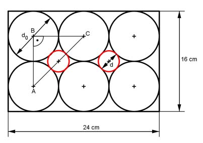

Aufgabe 348 6 Spielkugeln sind in einer Holzkiste (Länge 24 cm, Breite 16 cm) so verpackt, dass sie die Außenwände berühren. Welchen Durchmesser d hat eine kleine Kugel, die in die Zwischenräume zwischen den großen Kugeln passt?  d0 = 24 cm/3 oder 16 cm/2 = 8 cm Satz von Pythagoras im Dreieck ACB: AB = BC = 2 * d0/2 = 2 * 8 cm/2 = 8 cm AC² = AB² + BC² = 8² cm² + 8² cm² = 128 cm² |√ AC = 11,3 cm d = AC - 2 * d0/2 = 11,3 cm - 8 cm = 3,3 cm